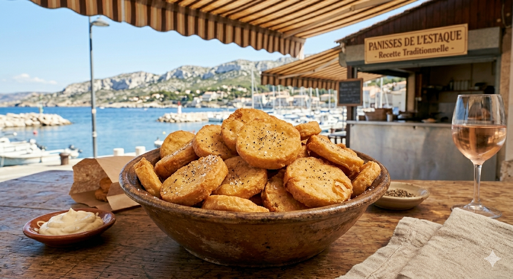

Se promener à l'Estaque, entre Marseille et la Côte Bleue, c'est s'offrir une parenthèse hors du temps. C'est ici, sur le port, que les panisses sont devenus une légende. Importés par les ouvriers italiens au début du XXe siècle, ces petits disques d'or sont le symbole de la convivialité marseillaise.

À l'Estaque, on ne plaisante pas avec la panisse. C'est une cuisine de peu : de l'eau, de la farine de pois chiches et un bon tour de main. Le secret réside dans la patience : laisser la pâte bien "sécher" avant de la faire dorer. On les mange brûlantes, avec juste un peu de poivre ou une pointe d'aïoli pour les gourmands.
1. La Cuisson de la Pâte : Dans une casserole, portez l'eau à ébullition avec le sel et les 2 cuillères d'huile d'olive. Versez la farine de pois chiches en pluie tout en fouettant énergiquement pour éviter les grumeaux. Baissez le feu et remuez sans cesse pendant environ 15 minutes à la cuillère en bois jusqu'à ce que la pâte épaississe et se détache de la paroi.( très important, ce laps de temps )
2. Le Moulage : Versez la préparation encore chaude dans des moules cylindriques (type moules à cake ou boîtes de conserve vides et huilées) pour obtenir des rouleaux, ou dans un plat à fond plat pour obtenir une épaisseur de 2 cm. Laissez refroidir, puis placez au réfrigérateur pendant au moins 2 heures pour que la pâte soit bien ferme.
3. La Découpe : Démoulez et coupez la pâte en rondelles d'environ 1 cm d'épaisseur (ou en frites si vous avez utilisé un plat plat).
4. La Friture : Faites chauffer l'huile de friture. Plongez les panisses par petites quantités jusqu'à ce qu'elles soient bien dorées et croustillantes. Égouttez sur du papier absorbant.
Le conseil de Marie : Servez-les immédiatement, bien poivrées. À Marseille, on dit que la meilleure panisse est celle qu'on partage en regardant la mer.